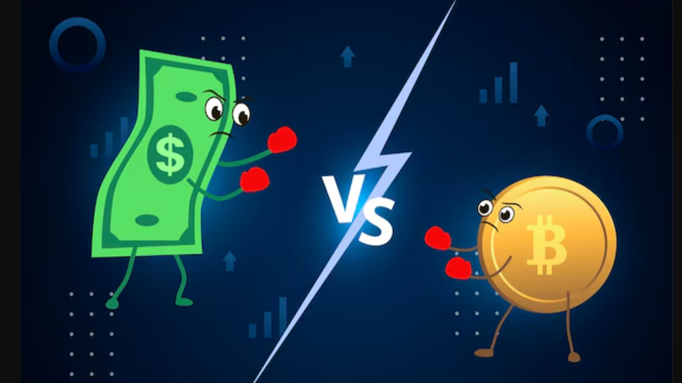

Crypto vs. Forex vs. Stocks: Choosing Your Battlefield in 2026
In 2026, the lines between traditional finance and digital assets have blurred more than ever. With the rise of tokenized "Real World Assets" (RWAs) and 24/7 trading becoming a global demand, traders are no longer stuck in one silo. However, each market still requires a fundamentally different psychological and technical approach.
Whether you are chasing the extreme volatility of altcoins, the macro-economic puzzles of Forex, or the steady dividends of the S&P 500, understanding the structural "DNA" of these markets is your first step to profitability.
1. Market Speed: Volatility Comparison
Volatility is a double-edged sword. In Forex, a 1% move in the EUR/USD is considered a major event, often requiring high leverage to see significant gains. In Stocks, blue-chip companies typically move 1–3% daily.
The Crypto Difference: In the crypto market, a 10% daily swing is a "Tuesday." While this offers the highest upside, it also requires the strictest stop-loss discipline to avoid total portfolio liquidation.
2. Trading Hours and Accessibility
The Stock Market remains the most rigid, operating on a 9:30 AM to 4:00 PM (EST) schedule with weekends off. This "forced rest" allows for reassessment but can lead to "gaps"—where the price opens much higher or lower than it closed.
- Forex: Operates 24/5, following the sun from Sydney to New York.
- Crypto: Operates 24/7/365. It never sleeps, meaning news at 3:00 AM on a Sunday will impact your balance instantly.
3. Regulation vs. Autonomy
The Stock and Forex markets are overseen by heavyweights like the SEC and CFTC. Your funds are generally protected by insurance (SIPC), and market manipulation is strictly policed.
Crypto has matured significantly by 2026, with institutional-grade ETFs and regulated exchanges, but it still offers the "Wild West" of DeFi. In DeFi, you have 100% autonomy over your funds, but there is no "customer support" if you send money to the wrong address.
4. Side-by-Side Market Specs
| Feature | Crypto | Forex | Stocks |
|---|---|---|---|
| Liquidity | High (BTC/ETH) / Low (Alts) | Highest (Global) | High (Large Caps) |
| Leverage | Up to 100x (Dangerous) | Up to 500x | Limited (Usually 2x-4x) |
| Asset Class | Digital/Utility Tokens | National Currencies | Company Ownership |
| Analysis Type | Sentiment & On-Chain | Macroeconomics | Earnings & Value |
5. Which Market Fits Your Personality?
- The "Night Owl" (Crypto): Best if you prefer trading outside of work hours and enjoy high-risk, high-reward "hunting."
- The "Strategist" (Forex): Best if you enjoy following global news, interest rates, and geopolitical shifts.
- The "Builder" (Stocks): Best if you prefer steady, long-term growth and want to benefit from the actual productivity of global corporations.